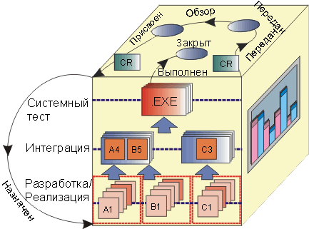

|
Запрос изменений (CR) -Формально
поданный рабочий продукт, используемый для отслеживания всех запросов заинтересованных лиц на протяжение всего жизненного цикла
проекта, включая запросы на создание функций, расширение возможностей продукта, исправление недостатков и другую
информацию, связанную с разработкой продукта. В Запросе изменений содержится вся хронология изменений, включая
изменения состояний, их время и причины. Эта информация доступна также для повторных проверок и окончательного закрытия
запроса.
Совет по контролю за изменениями (или конфигурациями) CCB) - это совет, в который
входят представители различных участников проекта (клиентов, разработчиков и пользователей) для наблюдения за процессом
изменений. В небольших проектах Совет по контролю за изменениями может состоять из одного члена, например руководителя
проекта или разработчика архитектуры. В Rational Unified Process роль Совета по контролю за изменениями называется администратор управления изменениями.
Обзорная встреча Совета по контролю за изменениями
служит для проверки поданных запросов изменений. На встрече делается первоначальная оценка обоснованности
запросов изменений. Если запрос обоснован, то в зависимости от наличия ресурсов, приоритета, сроков и других критериев
принимается решение о внесении изменения. Такие встречи обычно проводятся раз в неделю. Если поступает много запросов
или приближаются сроки выпуска продукта, то встречи можно проводить чаще, например, каждый день. Обычно на встрече
Совета по контролю за изменениями присутствуют администратор тестирования, администратор разработки и представитель
отдела маркетинга. Также, при необходимости, могут приглашаться другие участники.
Форма подачи запроса изменения выдается при подаче первый раз запроса изменения. В форме показываются
только обязательные для заполнения поля.
Комбинированная Форма запроса изменения выдается при просмотре поданного запроса. Эта форма содержит все поля,
необходимые для описания запроса изменения.
Ниже описывается процесс обработки запроса изменение - этапы и состояния, а также лица, которых необходимо оповещать в
течении жизненного цикла запроса изменения. Общий процесс обработки запроса изменения описан в Задача: Организация процесса контроля запросов изменений.
Следующий пример показывает типовые решения, которые можно применять для управления запросами изменений (щелкните на
элемент в диаграмме для просмотра описания):

Описание задач примера процесса управления запросами изменений:
|
Задача
|
Описание
|
Ответственность
|
|
Подача запроса изменений
|
Любое заинтересованное лицо в проекте может подать запрос изменений. Запрос изменений поступает в
систему отслеживания запросов изменений (например, Rational ClearQuest) и помещается в очередь Совета
по контролю за изменениями со статусом Подан.
|
Подающий
|
|
Рассмотрение запроса изменений
|
Цель этого этапа - рассмотрение поданных запросов на изменение. На Обзорной встрече
Совета по контролю за изменениями делается первоначальная проверка содержания запросов изменений, чтобы
определить допустимость запроса. Если запрос обоснован, то в зависимости от наличия ресурсов,
приоритета, сроков и других критериев принимается решение о внесении изменения.
|
Совет по контролю за изменениями
|
|
Подтверждение повторного или
отклоненного запроса изменений
|
Если запрос изменений может быть повторным или ранее отклоненным по причине
неправильности составления или работы, то уполномоченный Совета по контролю за изменениями должен, в
случае необходимости, получить дополнительную информацию у лица, подавшего запрос.
|
Уполномоченный Совета по контролю за изменениями
|
|
Обновление запроса изменений
|
Если требуется дополнительная информация Дополнительная информация) для оценки запроса
изменений или если запрос изменений отклонен (например как Повторный,
Отклоненный и т.д.), то лицо, подавшее запрос получает уведомление и может
обновить запрос изменений. После этого обновленный запрос изменений вновь поступает в очередь Совета по
контролю за изменениями для проверки дополнительной информации.
|
Подающий
|
|
Планирование и назначение
работ
|
Когда запрос изменений открыт, руководитель проекта поручает работу одному из участников
команды в зависимости от типа запроса (например, расширение, неполадка, изменение документации, ошибка
при тестировании и т.д.) и вносит необходимые изменения в расписание проекта.
|
Руководитель проекта
|
|
Внесение изменений
|
Ответственный участник коллектива выполняет набор работ по выполнению изменений, утвержденный для
данного процесса разработки, например, определение предварительных условий, анализ и проектирование,
внедрение, разработка справочных материалов пользователя и тестирование. Эти работы подразумевают
проверку и тестирование в соответствии с требованиями, утвержденными для данного процесса разработки.
После этого запросу изменений присваивается статус Выполнен.
|
Ответственный участник коллектива
|
|
Проверка изменений в
тестовой компиляции
|
После того, как изменения выполнены ответственным участником коллектива (аналитиком,
разработчиком, тестирующим и т.д.), они поступают в очередь тестирования для проверки в
тестовой компиляции продукта.
|
Тестировщик
|
|
Проверка изменений в
выпускной компиляции
|
После проверки изменений в тестовой компиляции, запрос изменений помещается в очередь для
проверки в выпускной компиляции продукта, подготовки информация о выпуске и закрытия
запроса изменений.
|
Уполномоченный Советом по контролю за изменениями (системный интегратор)
|
Следующий пример диаграммы показывает типовые состояния и указывает, кого необходимо уведомлять в течение жизненного
цикла запроса изменений, (щелкните на диаграмме для просмотра описания):

Описание примера состояний процесса управления запросами изменений:
|
Состояние
|
Определение
|
Права доступа
|
|
Подан
|
Это состояние возникает в следующих ситуациях: 1) подачи нового запроса изменений, 2) обновления
существующего запроса изменений или 3) рассмотрения отложенного запроса изменений для
следующего выпуска. Запрос изменений помещен в очередь для рассмотрения Советом по контролю за
изменениями. На этом этапе ему не присваивается ответственное лицо.
|
Все пользователи
|
|
Отложен
|
Запрос изменений признан допустимым, но вне рамок данного выпуска. Запросы изменений со статусом
Отложен рассматриваются при последующих выпусках продукта. Также для запроса изменений
может быть указан целевой выпуск и его время выхода, для которого запрос считается
поданным и вновь помещается в очередь для рассмотрения Советом по контролю за
изменениями.
|
Администратор
Руководитель проекта
|
|
Повторный
|
Запрос изменений считается повтором поданного запроса изменений. Присвоить этот статус запросу может
Администратор Совета по контролю за изменениями или ответственное лицо. При присвоении запросу статуса
Повторный будет указан номер запроса, который он повторяет (в ClearQuest - на вкладке
Вложения). Подающий запрос должен запрашивать базу данных запросов перед подачей нового запроса. Это
позволит сэкономить время. Подавшие повторный запрос изменений должны быть занесены в список для
оповещения о состояниях этого запроса изменений.
|
Администратор
Руководитель проекта
Администратор контроля качества
Разработка
|
|
Отказ
|
Этот статус запроса изменений означает, что он признан недопустимым Советом по контролю за изменениями
или уполномоченным участником команды или требуется дополнительная информация. Если раннее запрос
изменений обладал статусом Открыт, то он убирается из очереди на выполнение и будет вновь
рассмотрен. Для подтверждения этого назначается участник Совета по контролю за изменениями. От
подавшего запрос не требуется дополнительных действий, за исключением случая, когда состояние запроса
изменяется на Дополнительная информация. Запрос изменений будет рассмотрен Советом по
контролю за изменениями с учетом дополнительной информации. В случае признания недопустимым, запрос
будет закрыт, и подавший запрос будет уведомлен.
|
Администратор
Руководитель проекта
Администратор разработки
Руководитель тестирования
|
|
Дополнительная информация
|
Для проверки допустимости запроса изменений со статусом Отказ или Повтор
недостаточно данных. Падавший запрос уведомляется о недостаточности данных.
|
Администратор
|
|
Открыт
|
Запрос изменений был признан допустимым в рамках данного выпуска и ожидает выполнения. Его выполнение
назначено на определенную веху проекта. Это называется - быть в "очереди назначения". Только члены
Совета по контролю за изменениями могут перевести запрос в очередь на выполнение. Если обнаружен запрос
изменений с приоритетом два или выше, он должен быть немедленно направлен на рассмотрение
администратору разработки или Администратору контроля качества. Они могут запланировать внеочередную
встречу Совета по контролю за изменениями или просто поместить запрос в очередь на выполнение.
|
Администратор
Руководитель проекта
Администратор разработки
Отдел контроля качества
|
|
Назначен
|
В обязанности руководителя проекта входит назначить ответственного за открытый запрос
изменений, в зависимости от типа запроса изменений, и обновить расписание проекта.
|
Руководитель проекта
|
|
Выполнен
|
Означает, что запрос выполнен и нуждается в проверке. Если подавший запрос - участник отдела контроля
качества, он автоматически становится владельцем запроса, в противном случае владельцем становиться
администратор контроля качества и запрос назначается вручную.
|
Администратор
Руководитель проекта
Администратор разработки
Администратор контроля качества
Отдел разработки
|
|
Тест не пройден
|
Этот статус присваивается запросу, который не прошел тестирование в тестовой или выпускной компиляции.
Владельцем запроса становится участник команды, выполнивший изменения.
|
Администратор
Отдел контроля качества
|
|
Проверен
|
Этот статус присваивается запросу, проверенному в тестовой компиляции, и готовому к
включению в выпуск.
|
Администратор
Отдел контроля качества
|
|
Закрыт
|
Запрос изменений не требует дальнейшей обработки. Это последний из возможных статусов запроса
изменений. Этот статус может присваивать только администратор проверки Совета по контролю за
изменениями. При присвоении статуса Закрыт подавший запрос получает уведомление. Статус
Закрыт может быть присвоен в следующих случаях: 1) после проверенного выполнения в
выпускной компиляции, 2) после подтверждения статуса Отказ или 3) при обнаружении повтора
другого запроса. В последнем случае подавший запрос будет уведомлен о наличии такого запроса и добавлен
к списку уведомляемых о статусе первоначального запроса (за дополнительной информацией обратитесь к
определениям статусов Отказ и Повтор). Если подавший запрос хочет оспорить
закрытие, то он может обновить запрос и вновь подать его на проверку Совета по контролю
за изменениями.
|
Администратор
|
Теги статуса позволяют создавать статистические отчеты о запросах изменений (возраст, распределение, тенденции).

Состояния запросов изменений в контексте CM Cube.
|